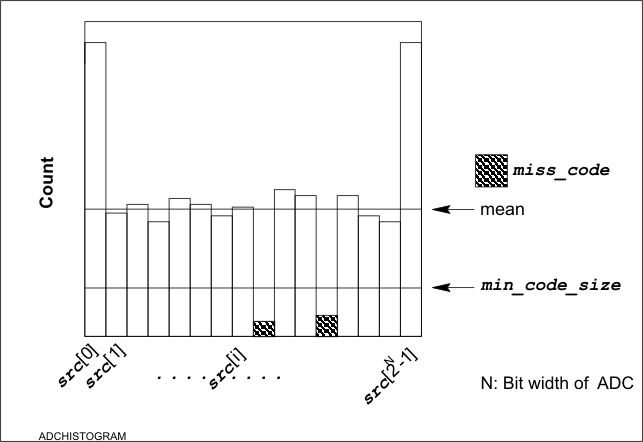
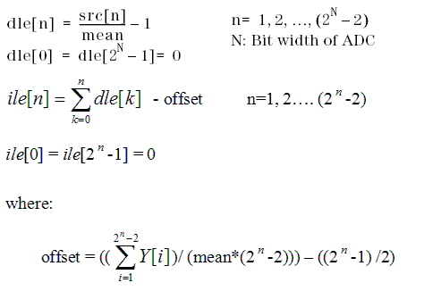
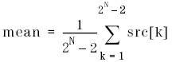
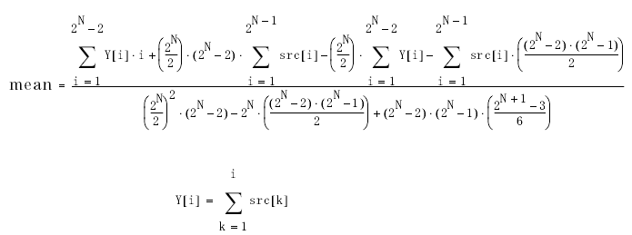
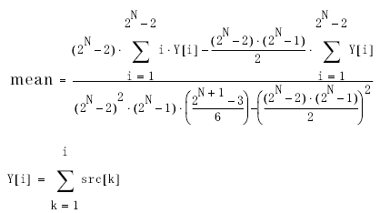

DSP_ADC_HISTOGRAM
This API computes the differential linearity error (DLE) and integral linearity error (ILE) for an A/D converter from the results of a static histogram test using ramp input signal.
To calculate the linearity errors of an A/D converter from the occurrences of output digital codes that resulted in the corresponding analog input levels, you should sort the output codes using the DSP_HISTOGRAM before using this function.

DSP_ADC_HISTOGRAM computes the DLE and ILE values as follows:

where
- END_PT:

- ZERO_PT:

- MIN_RMS:

If the code occurrence is less than a value specified by the min_code_size parameter, the code is defined as missing code.
Hence, if an element value of src is less than min_code_size, the subscript is stored into miss_codes array, and miss_num variable is incremented.
For the miss_codes array, declare an integer array variable using the INT. Here, the array size should be equal to or greater than the code size.
The components of result declared by the LINEARtype data type, are as follows:
Member |
Type |
Returned Value |
|---|---|---|
result.dmax |
DOUBLE |
Maximum DLE value |
result.dmin |
DOUBLE |
Minimum DLE value |
result.damax |
DOUBLE |
Absolute maximum DLE value |
result.imax |
DOUBLE |
Maximum ILE value |
result.imin |
DOUBLE |
Minimum ILE value |
result.iamax |
DOUBLE |
Absolute maximum ILE value |
result.dmax_index |
INT |
Maximum DLE subscript |
result.dmin_index |
INT |
Minimum DLE subscript |
result.damax_index |
INT |
Absolute maximum DLE subscript |
result.imax_index |
INT |
Maximum ILE subscript |
result.imin_index |
INT |
Minimum ILE subscript |
result.iamax_index |
INT |
Absolute maximum ILE subscript |
This API is defined in the header file /opt/hp93000/soc/prod_com/include/MAPI/libdsp.h.
Syntax
DSP_ADC_HISTOGRAM(ARRAY_I& src, LINEARtype *result, ARRAY_D& dle, ARRAY_D& ile, INT *miss_number, INT *miss_codes, INT ile_type, DOUBLE min_code_size); DSP_ADC_HISTOGRAM(INT *src, LINEARtype *result, DOUBLE *dle, DOUBLE *ile, INT *mis_number, INT *miss_codes, INT size, INT ile_type, DOUBLE min_code_size);
I/O |
Parameter |
Description / Range |
|---|---|---|
I |
src |
Source array. Each element of src must contain the occurrences of output digital codes that resulted in the corresponding input wave points. |
O |
result |
Results for DLE and ILE values Unit: LSB |
O |
dle |
Result array in which differential linearity error values are stored Unit: LSB |
O |
ile |
Result array in which integral linearity error values are stored Unit: LSB |
O |
miss_number |
Number of missing code |
O |
miss_codes |
Result array for the missing codes |
I |
size |
Number of elements to be processed 2 ≤ size ≤ 2097152 (ile_type = END_PT) 4 ≤ size ≤ 2097152 (otherwise) size ≤ (size of src) size ≤ (size of dle) size ≤ (size of ile) Note For sizes exceeding 2M samples, use the Wave
APIs.
|
I |
ile_type |
Straight line type of ILE END_PT: Connecting the terminal points ZERO_PT: Approximated to minimize peak deviation MIN_RMS: Approximated to minimize RMS |
I |
min_code_size |
Limit value to determine miss_codes 0.0 < min_code_size |
Example
Calculates a 8-bit ADC histogram
This example performs an ADC linearity test. DSP_ADC_HISTOGRAM calculates the ILE and DLE of the result data. AWG_pin, capture_variable, min_code_size, miss_codes and miss_number are parameters defined in this test method:
int GlobalOverOn,debug;
int off_line ;
ARRAY_I adc_wave;
ARRAY_I histogram;
ARRAY_D adc_dnla,adc_inla;
LINEARtype adc_lin ;
ARRAY_I esites, csites; // Enabled Sites array
int nsites ; // max number of configured Sites
# define ADC_resolution 8 // Assuming 8-BIT ADC, that is: 256 different codes
INT miss_codes [(INT) pow (2,(DOUBLE)ADC_resolution)];
ON_FIRST_INVOCATION_BEGIN() ;
GET_TESTFLOW_FLAG("debug_analog", &debug);
GET_TESTFLOW_FLAG("global_overon", &GlobalOverOn);
GET_SYSTEM_FLAG("offline",&off_line);
GET_ENABLED_SITES(esites);
GET_CONFIGURED_SITES(csites);
nsites = csites.size() ;
CONNECT();
/*connect and activate analog module trigger line */
Routing.pin(AWG_pin).connect(TM::SINGLE);
AWG( AWG_pin ).enable() ;
/* perform the test */
DIGITAL_CAPTURE_TEST( 1.0 ) ;
/* deactivate analog module trigger line and disconnect the analog pin */
AWG( AWG_pin ).disable() ;
Routing.pin(AWG_pin).disconnect();
ON_FIRST_INVOCATION_END() ;
/* retrieve measurement data */
adc_wave = VECTOR (capture_variable).getVectors ();
/* perform computation */
DSP_HISTOGRAM ( adc_wave, histogram, 1, 255, 256);
try {
DSP_ADC_HISTOGRAM ( histogram, &adc_lin, adc_dnla, adc_inla, &miss_number, miss_codes, END_PT, min_code_size );
} catch (Error &exc) {
// an error occurred; most likely because the captured waveform contains only missing codes/is a straight horizontal line
ERROR_EXIT(TM::RETURN_TO_FLOW);
}if ( debug )
{
PUT_DEBUG ( AWG_pin, "Lin_adc_wave", adc_wave );
PUT_DEBUG ( AWG_pin, "Histogram", histogram);
PUT_DEBUG ( AWG_pin, "Lin_adc_dnl", adc_dnla );
PUT_DEBUG ( AWG_pin, "Lin_adc_inl", adc_inla );
cout << endl ;
}
/* compare computed result with limits and set pass/fail */
TEST( AWG_pin, "ADC_ILE", adc_lin.iamax);
TEST( AWG_pin, "ADC_DLE", adc_lin.damax);
Functional changes
- Introduced before SmarTest 6.3.2